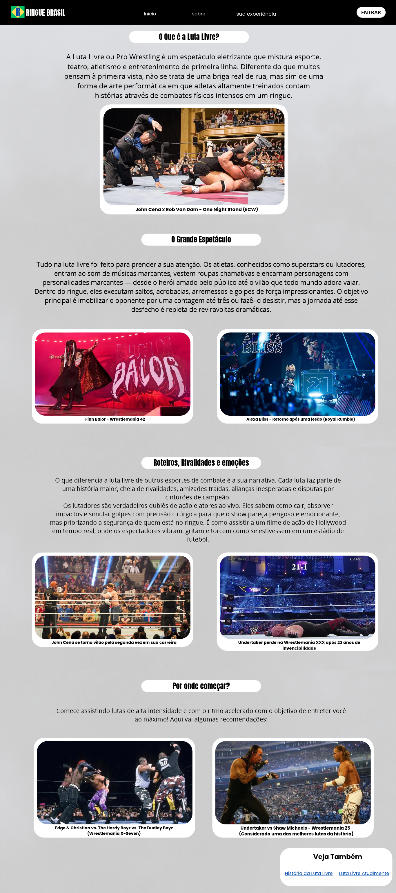

A luta livre, ou pro wrestling, é um espetáculo que mistura esporte, teatro, atletismo e entretenimento. Atletas treinados contam histórias por meio de combates no ringue, com personagens, rivalidades e resultados planejados.

John Cena x Rob Van Dam — One Night Stand (ECW)
Tudo na luta livre busca prender a sua atenção. Os atletas entram ao som de músicas marcantes, vestem roupas chamativas e interpretam personagens com personalidades próprias. O público acompanha seus heróis e vaia seus vilões.
Dentro do ringue, eles executam saltos, acrobacias, arremessos e golpes de força. Entre as formas de vencer estão manter os ombros do adversário no chão durante a contagem de três e fazê-lo desistir com uma submissão. As regras podem mudar conforme o tipo de luta.
Finn Bálor em sua entrada
Alexa Bliss em seu retorno no Royal Rumble
A narrativa conecta os combates a uma história maior, cheia de rivalidades, amizades desfeitas, alianças inesperadas e disputas por cinturões.
Os lutadores combinam atuação com preparação física e técnicas para executar os movimentos. As quedas e os impactos exigem treino e cuidado. O público participa da experiência torcendo, vibrando e reagindo às reviravoltas.
John Cena em uma reviravolta de seu personagem
O fim da sequência de vitórias de Undertaker na WrestleMania XXX
O protótipo destaca duas lutas para conhecer diferentes estilos. Uma reúne escadas, duplas e acrobacias. A outra combina uma rivalidade marcante com a construção de um grande confronto.
Edge & Christian vs. The Hardy Boyz vs. The Dudley Boyz — WrestleMania X-Seven
Undertaker vs. Shawn Michaels — WrestleMania 25
Faça seu cadastro e login clicando aqui.
Deixe sua avaliação, seu interesse pelo esporte e um comentário para melhorar este site.
Juntos, podemos construir uma comunidade forte no Brasil ♥
Feito com amor por Gustavo W. ♥ SPTech © 2023–2026